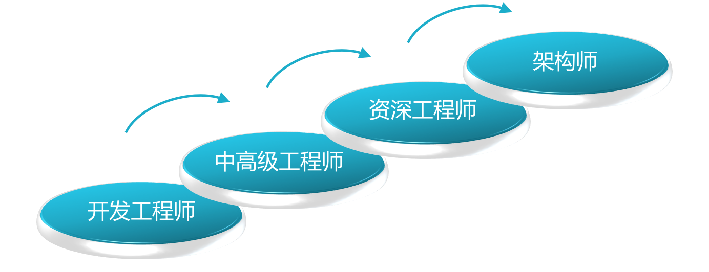
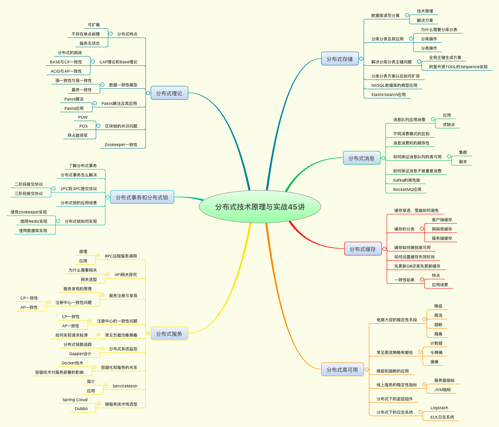

- 00 开篇词：搭建分布式知识体系，挑战高薪 Offer.md
- 01 如何证明分布式系统的 CAP 理论？.md
- 02 不同数据一致性模型有哪些应用？.md
- 03 如何透彻理解 Paxos 算法？.md
- 04 ZooKeeper 如何保证数据一致性？.md
- 05 共识问题：区块链如何确认记账权？.md
- 06 如何准备一线互联网公司面试？.md
- 07 分布式事务有哪些解决方案？.md
- 08 对比两阶段提交，三阶段协议有哪些改进？.md
- 09 MySQL 数据库如何实现 XA 规范？.md
- 10 如何在业务中体现 TCC 事务模型？.md
- 11 分布式锁有哪些应用场景和实现？.md
- 12 如何使用 Redis 快速实现分布式锁？.md
- 13 分布式事务考点梳理 + 高频面试题.md
- 14 如何理解 RPC 远程服务调用？.md
- 15 为什么微服务需要 API 网关？.md
- 16 如何实现服务注册与发现？.md
- 17 如何实现分布式调用跟踪？.md
- 18 分布式下如何实现配置管理？.md
- 19 容器化升级对服务有哪些影响？.md
- 20 ServiceMesh：服务网格有哪些应用？.md
- 21 Dubbo vs Spring Cloud：两大技术栈如何选型？.md
- 22 分布式服务考点梳理 + 高频面试题.md
- 23 读写分离如何在业务中落地？.md
- 24 为什么需要分库分表，如何实现？.md
- 25 存储拆分后，如何解决唯一主键问题？.md
- 26 分库分表以后，如何实现扩容？.md
- 27 NoSQL 数据库有哪些典型应用？.md
- 28 ElasticSearch 是如何建立索引的？.md
- 29 分布式存储考点梳理 + 高频面试题.md
- 30 消息队列有哪些应用场景？.md
- 31 集群消费和广播消费有什么区别？.md
- 32 业务上需要顺序消费，怎么保证时序性？.md
- 33 消息幂等：如何保证消息不被重复消费？.md
- 34 高可用：如何实现消息队列的 HA？.md
- 35 消息队列选型：Kafka 如何实现高性能？.md
- 36 消息队列选型：RocketMQ 适用哪些场景？.md
- 37 消息队列考点梳理 + 高频面试题.md
- 38 不止业务缓存，分布式系统中还有哪些缓存？.md
- 39 如何避免缓存穿透、缓存击穿、缓存雪崩？.md
- 40 经典问题：先更新数据库，还是先更新缓存？.md
- 41 失效策略：缓存过期都有哪些策略？.md
- 42 负载均衡：一致性哈希解决了哪些问题？.md
- 43 缓存高可用：缓存如何保证高可用？.md
- 44 分布式缓存考点梳理 + 高频面试题.md
- 45 从双十一看高可用的保障方式.md
- 46 高并发场景下如何实现系统限流？.md
- 47 降级和熔断：如何增强服务稳定性？.md
- 48 如何选择适合业务的负载均衡策略？.md
- 49 线上服务有哪些稳定性指标？.md
- 50 分布式下有哪些好用的监控组件？.md
- 51 分布式下如何实现统一日志系统？.md
- 52 分布式路漫漫，厚积薄发才是王道.md
00 开篇词：搭建分布式知识体系，挑战高薪 Offer
你好，我是邴越，在一线互联网公司从事分布式开发工作多年，一直关注分布式理论和新技术的发展。
互联网发展到今天，用户数量越来越多，产生的数据规模也越来越大，应用系统必须支持高并发访问和海量数据处理的需求。
对比集中式架构，分布式系统由于具有可扩展性，可以动态扩展服务和存储节点，使用廉价的机器构建高性能的服务，更适合如今的互联网业务。分布式系统技术已经成为微服务架构、大数据、云计算等技术领域的基石，在电商、互联网金融、支付等众多业务中，都离不开分布式技术的有效运用。
掌握分布式技能的后端工程师越来越抢手，不止业务部门、中间件和基础架构等部门也在大规模抢人。分布式技术的应用越来越广泛，各大公司的相关岗位要求也越来越高，然而在面试和工作中，我们却看到各种各样的问题：
- 面试时，可以回答概念性的问题，但问到实质性问题时就懵了，由于缺少相关经验而卡住；
- 工作中对常用分布式技术的原理一知半解，在典型场景下可以应付，但稍微变更业务场景或业务目标后，就开始毫无头绪；
- 系统设计中，没有全面平衡各个设计点，关注了收益，却没考虑到风险，比如增加了缓存，却带来了数据不一致，增加了消息队列，却因为不合理的重试导致服务异常。
总结来说，这往往是从业者没有在实际的分布式业务场景中实践过，或者对分步式技术缺乏体系化的认知，或者对一些原理和底层的内容未曾深入研究，导致可以解决常见问题，而没有系统化的解决思路。
因此，我梳理了一套分布式技术的方法论，希望可以帮助你快速而体系化地补齐分布式知识。此外，一路走来，我在分布式系统设计中踩过的坑，在开发实践中看到和经历过的一些典型问题，也将在这里一并分享给你，希望能够帮到更多开发者，并减轻你学习分布式的畏难心理。
分布式是工程师进阶的必经之路
经常听到一些开发人员，在工作之余感叹自己职业发展的困惑与焦虑，比如每天写业务代码，如何摆脱 CRUD Boy 的标签，去提升技术能力？一直在传统企业工作，怎么才能加入 BAT 等大公司？所有的机遇都是在充分准备后才能获得的，这些问题的关键，就是你在技术上的持续精进。

**如果想在技术线上深耕和谋求发展，成为高级工程师、资深工程师或者架构师，**掌握分布式系统知识已经成为了必要的一环。不管是目前流行的 SOA 架构，还是蓬勃发展的微服务和 Serverless 架构，都是在分布式的基础上构建的，业务开发中的框架选型、注册中心，以及服务拆分之后面临的分布式事务问题、分布式锁，也都是分布式系统所关注的。
想要高薪 Offer，必须掌握分布式
要想进入大公司并拿到高薪 Offer，分布式技术也是一个很好的敲门砖。大型互联网公司每天都要面对海量的业务请求，处理各种复杂的系统问题是工作常态，所以需要应聘人员掌握常用的分布式技术，并在面试过程中重点考察你对分布式系统的理解和经验水平。
针对高级岗位，除了掌握在分布式环境下进行开发的能力，你还需要了解其中的原理、机制，以便能够快速定位线上问题；而对于架构师来说，你还需要具备独立设计分布式系统的能力，这就需要了解高并发、高可用的相关知识了。
在****拉勾网上搜索后端工程师的招聘岗位，可以看到很多岗位都要求掌握缓存、分布式服务、消息队列等分布式组件应用，部分岗位还要求在高并发等分布式设计方向有一定的积累。

结合拉勾对海量招聘启事的大数据分析，我们也总结出了后端开发者在面试中要求掌握的分布式技能点，同时也把它们融入到了课程设计中：
- 分布式系统理论和设计；
- 分布式事务和一致性；
- 分布式服务及微服务架构；
- 分布式缓存和常见 NoSQL 应用；
- 分布式下数据库的拆分，比如读写分离、分库分表；
- 消息中间件的应用，常见组件的选型；
- 合理应用分布式技术，实现系统的高可用。

难点不难，给你学得会的分布式课程
分布式系统在工作和面试中如此重要，但是掌握起来并不容易。
- 理论众多、难以入手。分布式系统不仅涉及一致性、事务等众多的理论知识，还包括非常多的复杂算法，比如 Paxos 和 Zab 算法，如果没有一个明确的抓手，学习起来会很吃力。
- 领域庞杂、关联技术栈多。分布式系统涉及很多领域，比如 RPC 服务调用、分库分表，这些不同的领域需要了解和掌握不同的技术栈。因此我的建议是，要想快速提升分布式技术能力，那么需要明确哪些才是你日常工作中最迫切需要的，从实践中开始体验和学习，积累经验。要知道，分布式不是一堆理论的堆砌，而是和日常开发息息相关。
- 工作特点，接触不到分布式**。鉴于现在一些软件开发公司，或者传统公司的 IT 部门，还在使用集中式系统架构，所以部分开发者平时在工作中很少接触分布式系统，因此，我在这个课程中，将会侧重讲解很多实际场景的实践内容**，以帮助你更有效地掌握分布式。
工作多年，我从一个初入行的新人，一步步晋升一线互联网公司的核心业务负责人，我深知分布式知识的重要性和学习痛点，为了让你在短时间内能够快速掌握分布式知识，我对这门课程进行了精心设计。
（1）知识体系化，快速学习
碎片化知识很难有效学习，体系化的学习才是重点。分布式系统知识足够庞杂，本课程从理论开始，一步一步落地到实践中，帮助你快速构建知识框架，让你对分布式技术有个总体的认知。

（2）选取最常用的知识点
分布式系统博大精深，但并不是每个人都在做基础架构研发，也不是每一项技术都能直接落地，因而本课程选取了在工程开发中最常用的技术栈，比如在分布式服务模块中选取了网关、注册中心、容器化等内容来讲解，在数据库模块中选择了读写分离、分库分表等内容，这些都是在开发中打交道最多的知识点。
（3）拒绝空谈理论，结合实际业务场景
技术是为业务服务的，再高深的技术都要落地，我们的课程内容不是干巴巴的讲理论，而是结合了实际业务场景，带着问题去讲解，让你能够在实际的场景中理解并应用，达到事半功倍的效果。
（4）面试真题解析，帮你赢取高薪 Offer
为了帮助你更好地准备面试，每个模块后面都附上了一个“加餐”内容，并梳理出了面试中经常出现的考点，以及高频面试真题。虽然是加餐，但是内容绝对有料。
当然，快速通关面试只是我们的目标之一，我更希望你在这个课程中，真正学有所得，将知识和经验融入到个人能力中，做一些长期主义的事情。
课程设计
本课程分为 7 个模块，共 45 讲。我将从实际工作和面试出发，从分布式理论开始带你建立知识框架，然后逐个攻破分布式技术的各个核心技术领域。为了让你更清晰地了解本课程中的所有知识点，我还准备了一份思维导图：

- **分布式基础：**扎实的理论是进一步学习分布式知识的钥匙，这一模块将详解分布式的概念，包括 CAP 和 Base 理论、各种数据一致性模型，以及两阶段和三阶段提交协议等。
- **分布式事务：**在电商、金融等业务中都涉及资金往来，事务非常重要，那么分布式事务如何解决、分布式锁如何实现、……，这一模块将会解答。
- **分布式服务：**分布式服务是微服务架构的必要条件，这一模块将讲解如何解决服务拆分后的一系列问题，比如 RPC、网关、注册中心等。
- **分布式存储：**系统架构拆分以后，存储层面的拆分同样重要，数据库层涉及读写分离、分库分表等，这一模块我们来一起来探究这些技术的原理，以及如何在业务中落地。
- **消息队列：**消息中间件是分布式系统架构的整合剂，这一模块将分享消息队列使用的常见问题，比如重复消费、消息时序等。
- 分布式缓存： 缓存的高性能在分布式系统中发挥了更加重要的作用，那么分布式缓存有哪些分类，以及有哪些经典问题，这一模块我们来一起探究。
- **分布式高可用：**高可用是工程师始终追求的目标，最后这个模块，我将会为你分享在分布式系统中如何保障系统可用性，如何做好系统监控和限流降级。